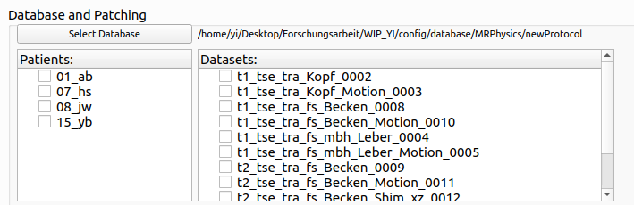
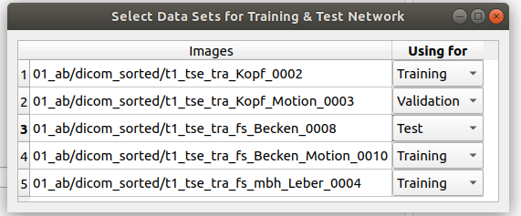

Click the button Select Database, you can select the path into a desired database, then the path will be shown after the button, and the patients and sequences will be shown separately in two lists. Then, you can check on patients and sequences. When both are selected, a Datasets Window will pop up and showing the combination of image paths you selected, if you do not want to select training/validation/test datasets manually, just ignore it (or close it). When you want to split the datasets by yourself, please remember to select all three groups of training/validation/test in the drop down box on the right side of each dataset path, only when all three groups are selected, the splitting mode can be set as self-defined. Finally, please click on any image item to confirm the changes.
Figure 1:
Select Datasets
|
 |
Figure 2:
Datasets Interface
|
 |